Eighteen candidates from the research pass, grouped. Click a card to open the site. Your own picks (makingsoftware, code.storage, Co-Star, cosmos.so, Wikimedia) are on the mood board, not repeated here.
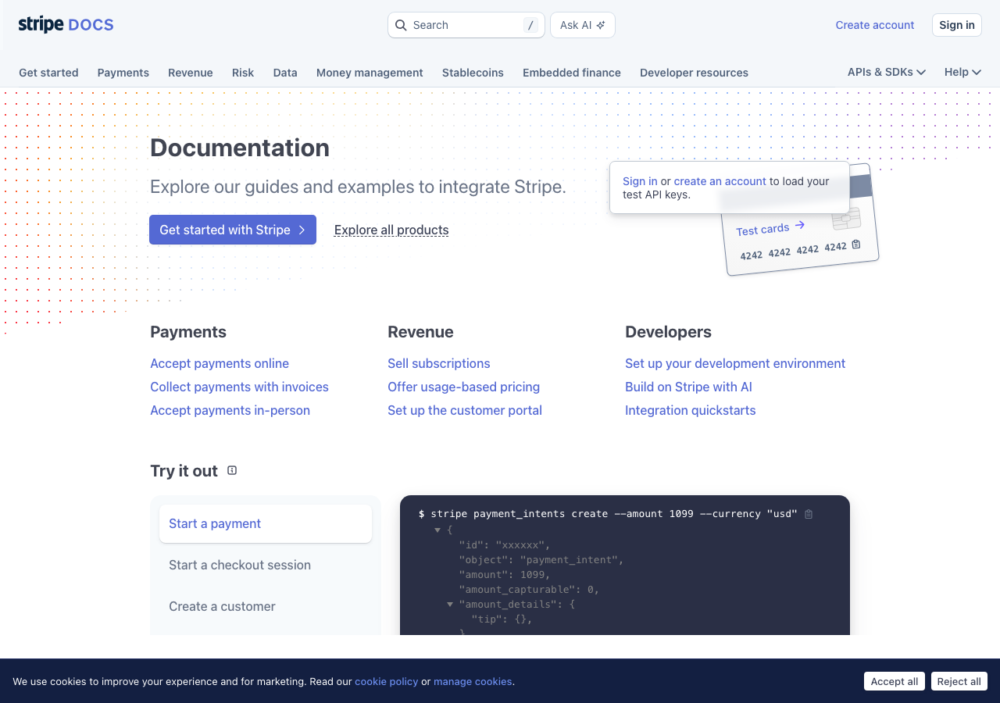
the benchmark: light, three-column, inline diagrams, code beside prose, never busy
docs.stripe.com/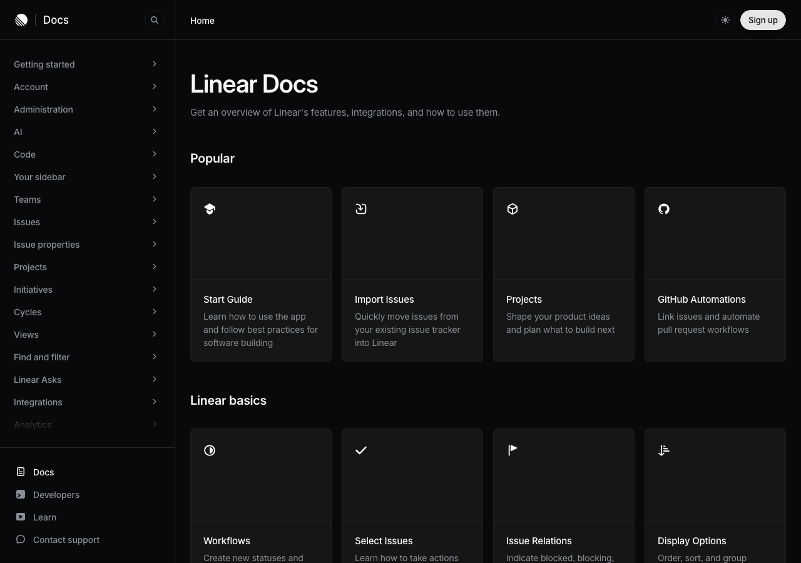
spare and airy; one idea per screen, generous margins, quiet type
linear.app/docs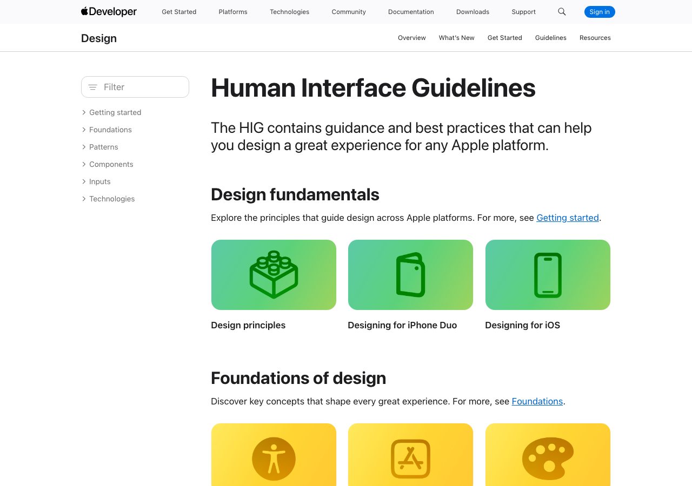
light, big calm headlines, flat explanatory illustrations
developer.apple.com/design/human-interface-guidelines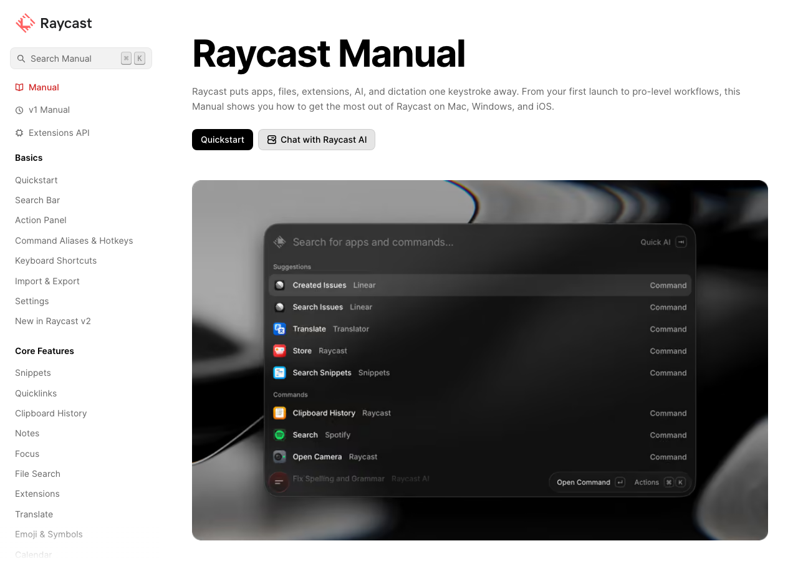
a real manual: light, screenshot-led, friendly
manual.raycast.com/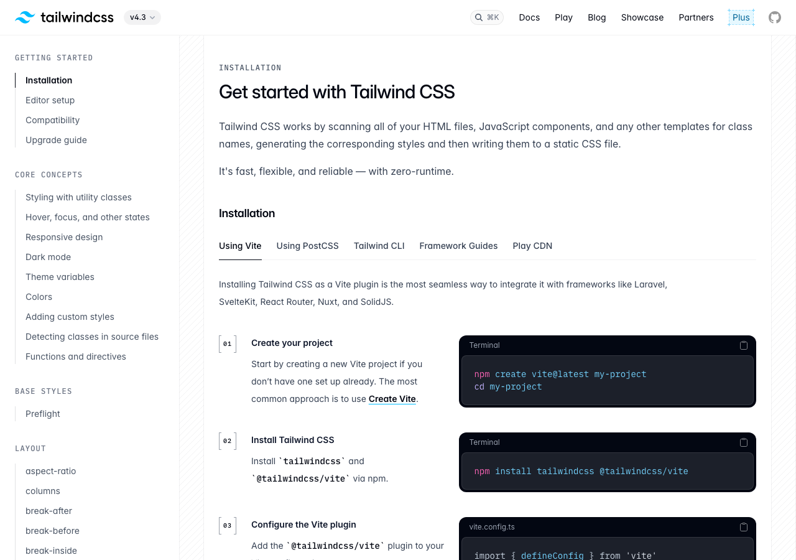
elegant type, live examples as figures, restrained colour on white
tailwindcss.com/docs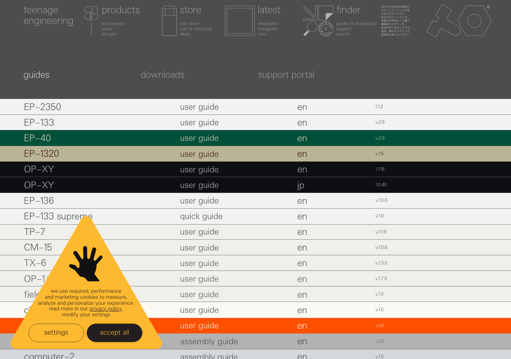
Swiss technical-manual look: mono caps, grids, product line drawings
teenage.engineering/guides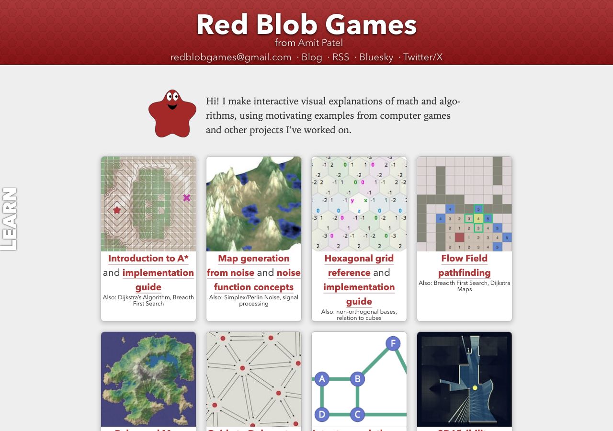
light, hand-built diagrams you can poke
www.redblobgames.com/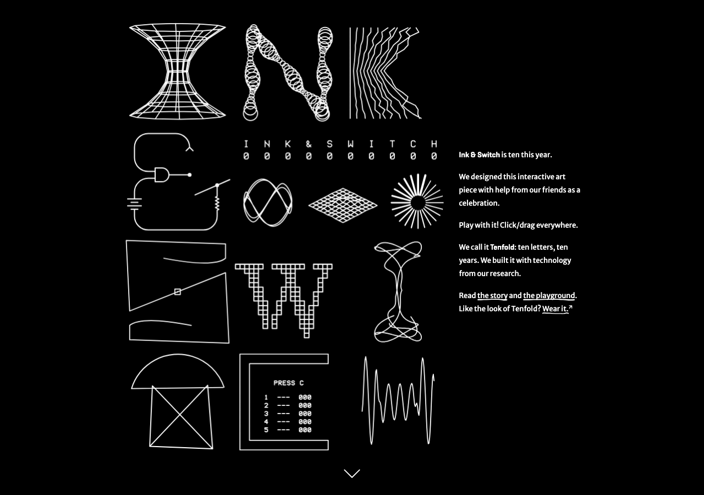
research essays: serif, paper-light, careful figures, ground-up explanation
www.inkandswitch.com/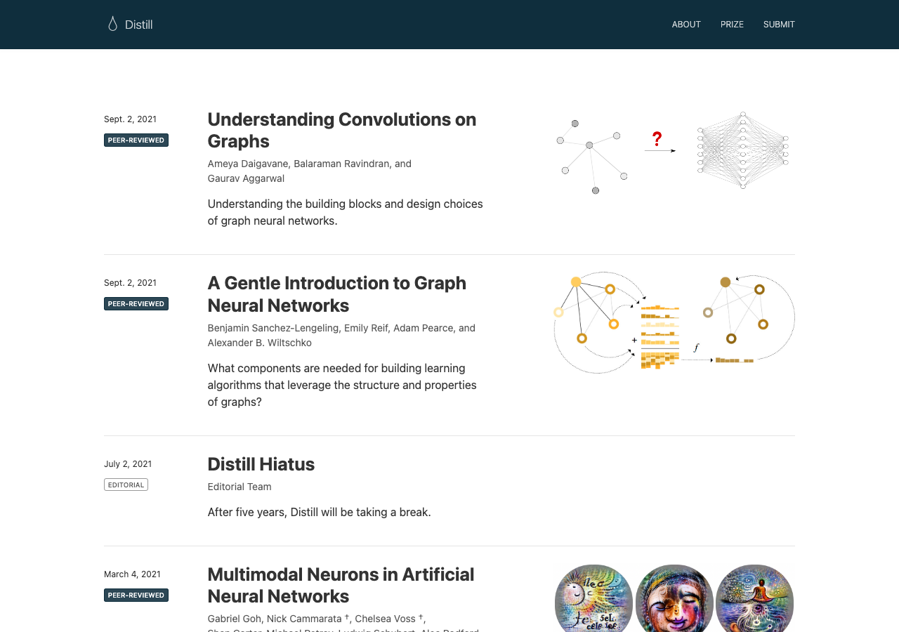
academic serif, numbered figures, light; archived but still the model
distill.pub/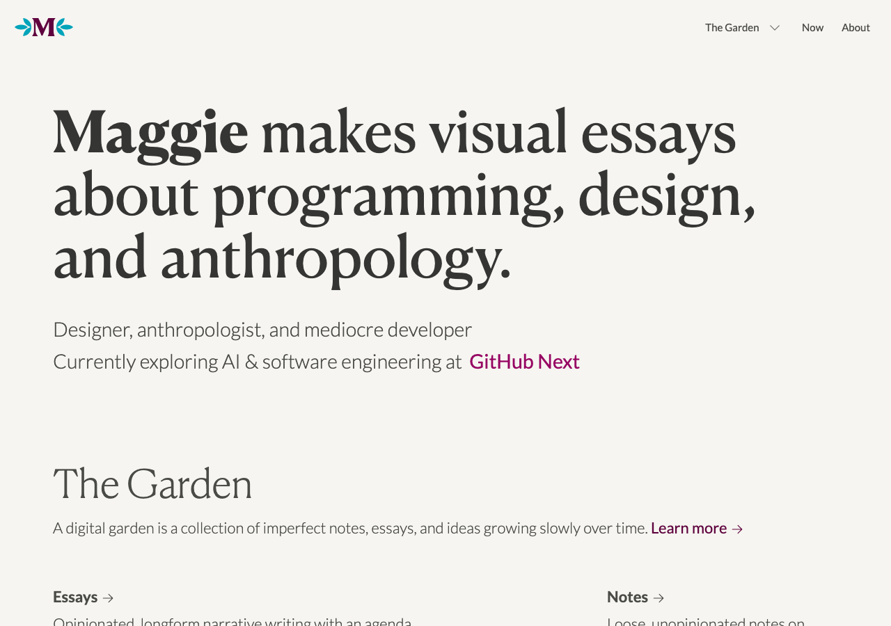
illustrated essays, warm paper tones, line drawings carry the argument
maggieappleton.com/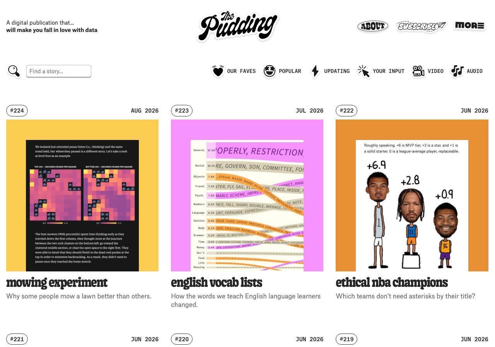
editorial visual essays; light, playful, data as illustration
pudding.cool/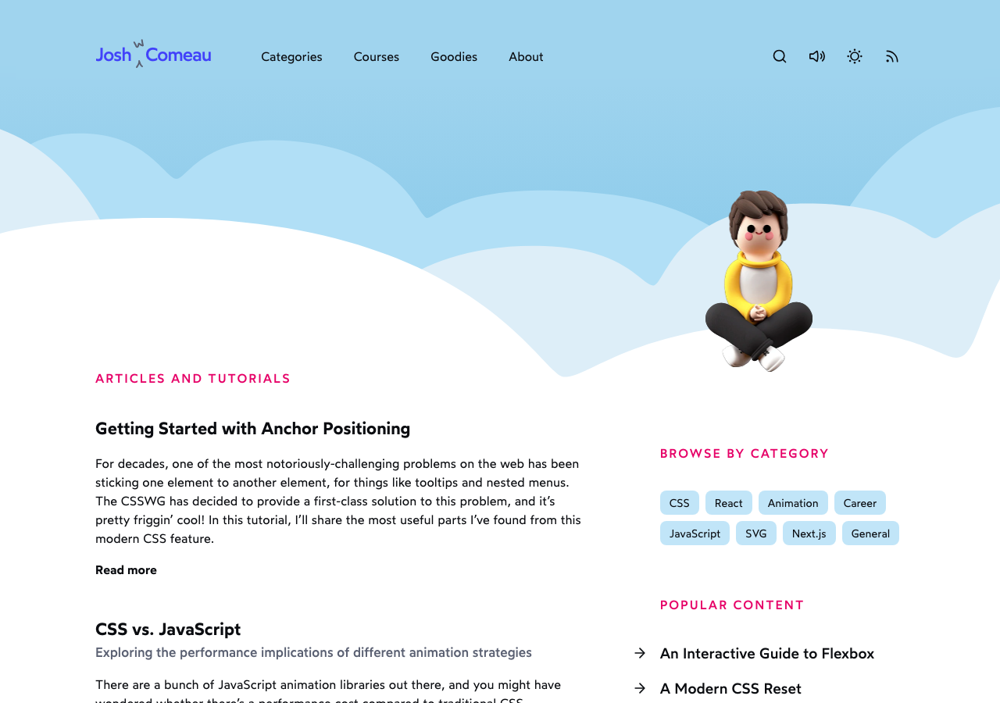
interactive explainers; whimsical, diagrams genuinely teach
www.joshwcomeau.com/one light screen, a 3D bookshelf, serif; renders in WebGL so no screenshot, open it
press.stripe.com/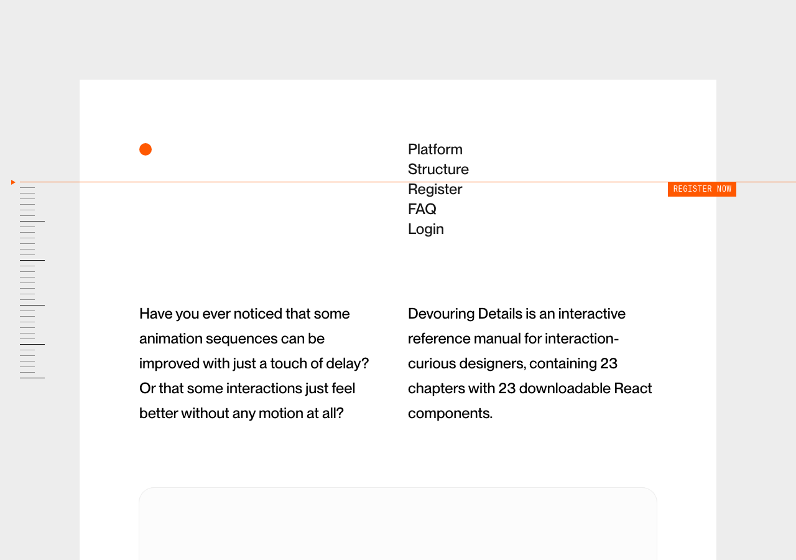
paper-light interaction-design textbook; cosmos.so air with worked examples
devouringdetails.com/dotted grid, mono caps, Swiss technical drawings; blocks bots, open it
usgraphics.com/flat colour geometry diagrams, serif, one proposition per screen; blocks bots, open it
www.c82.net/euclid/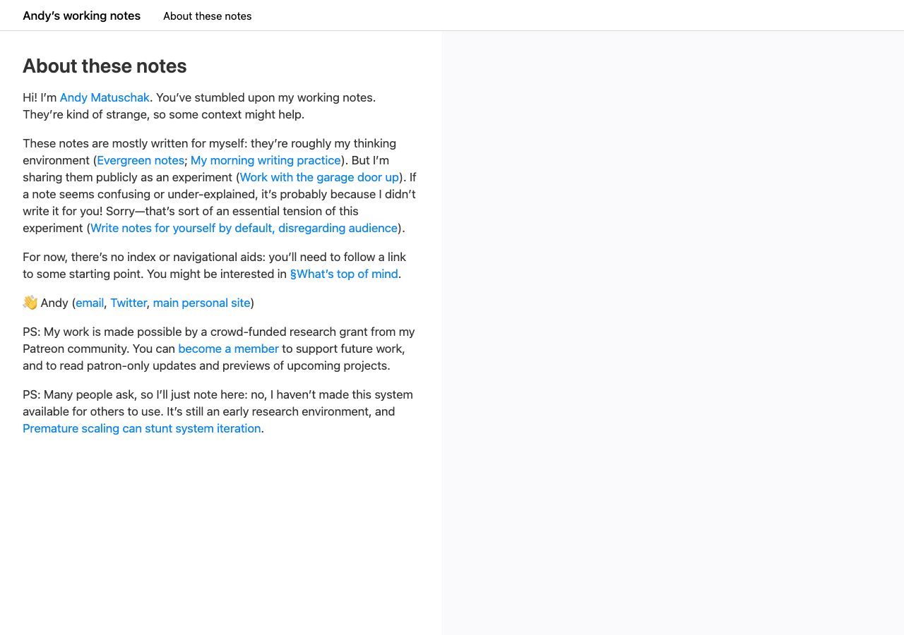
light, sliding-pane notes; reads like a mind
notes.andymatuschak.org/one hand-drawn explanation per screen, flat colour, white space
sketchplanations.com/